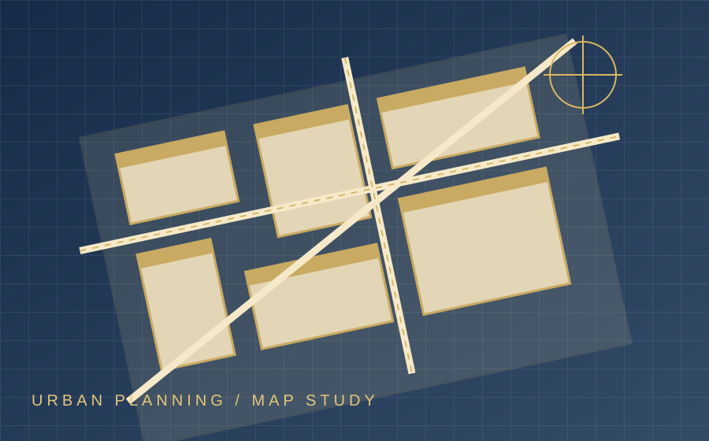
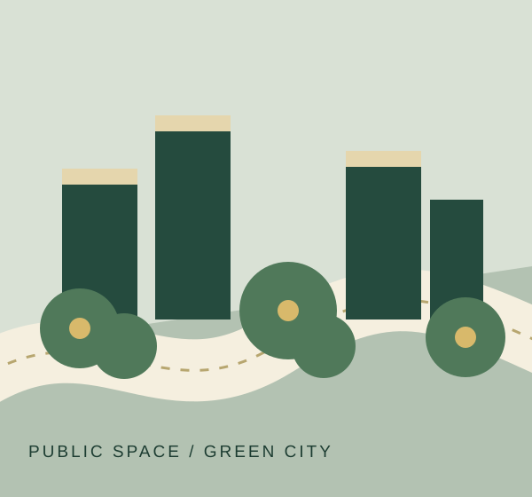

01
⌘
رسالتنا
تشجيع المبادرة الطلابية وتطوير المهارات في مجالات العمران والتخطيط والتصميم والعمل الجماعي.
نادي رواد العمارة مساحة تجمع الطلبة الشغوفين بالعمران والتصميم الحضري، لتحويل الأفكار إلى مبادرات وتجارب ذات أثر.
01 / من نحن
نؤمن أن التغيير الحضري يبدأ من المعرفة، ويكبر بالتعاون. لذلك نخلق مساحة للطلبة كي يتعلموا، يجرّبوا، ويشاركوا في بناء مستقبل أفضل لمدننا.
تشجيع المبادرة الطلابية وتطوير المهارات في مجالات العمران والتخطيط والتصميم والعمل الجماعي.
مجتمع طلابي ملهم يربط المعرفة الأكاديمية بالتجربة الميدانية والحلول الحضرية المبتكرة.
الإبداع، التعاون، المسؤولية، تبادل المعرفة، واحترام خصوصية كل مدينة واحتياجات سكانها.
02 / مجالاتنا
نتقاطع حول المدينة من زوايا مختلفة؛ من التخطيط والتصميم إلى إدارة المشاريع والتقنيات الحضرية.
فهم تنظيم المجال، استعمالات الأرض، وتطور الأحياء والمدن.
التفكير في الفضاءات والمباني وعلاقتها بالإنسان والمحيط.
التخطيط للمشاريع، التنسيق بين المتدخلين، ومتابعة الوقت والموارد والجودة.
تكوين أساسي في السنة الأولى يمهّد لمواصلة الدراسة في مسارات التقنيات الحضرية.
مقاربة تقنية للمجال الحضري وشبكاته وتجهيزاته وطرق تسييره.
فهم تحديات تسيير المدينة وتحسين الخدمات والبيئة الحضرية.
ملاحظة: هذه نبذات تعريفية عامة. يُرجى الرجوع إلى دليل التكوين الرسمي للجامعة لتأكيد المسارات والبرامج المعتمدة.
URBAN INSPIRATION / 01
من الخرائط إلى المباني، ومن الفضاء العام إلى حياة الناس.



03 / ماذا نفعل؟
مساحات للتجربة والتواصل وتبادل المعرفة، تتشكل حسب اهتمامات الطلبة وأفكارهم.
جلسات عملية لتبادل المهارات في أدوات التخطيط والتصميم والتمثيل الحضري.
قراءة المكان وملاحظة تحدياته وربط الدراسة بالواقع.
أفكار جماعية ومبادرات طلابية تفتح المجال للمشاركة والابتكار.
سيتم الإعلان عن الفعاليات القادمة عبر قنوات النادي الرسمية.
تابع أخبارنا ↗04 / مجتمعنا
رواد العمارة مجتمع من الطلبة الذين يجمعهم الفضول، روح المبادرة، والرغبة في التعلم وصناعة تجربة جامعية أغنى.
LEADERSHIP / القيادة
رئيس النادي • Club President
نائبة رئيس النادي • Vice President
FOUNDING MEMBERS / الأعضاء المؤسسون
FACULTY ADVISORS / الأساتذة المشرفون
أستاذ مشرف
أستاذ مشرف
07 / LEARN BY PLAYING
ألعاب قصيرة تبيّن كيف تتكامل التخصصات في مشروع حضري واحد. اختبر معلوماتك ثم اكتشف العلاقة بين المجالات.
اختار التخصص المناسب لكل مهمة حضرية.
08 / FAQ
معلومات أساسية حول النادي وطريقة المشاركة. التفاصيل المتعلقة بالنشاطات تُعلن عبر قنوات النادي الرسمية.
نادي طلابي يهتم بالعمران والتصميم والتقنيات الحضرية، ويشجع التعلم التطبيقي والتعاون والمبادرات الطلابية.
يمكن للطلبة المهتمين بمجالات المدينة والعمران والتصميم والعمل الجماعي التواصل مع النادي لمعرفة شروط وآليات المشاركة المتاحة.
ليس بالضرورة. بعض الأنشطة يمكن أن تكون للتعلم وتبادل المعرفة، ويُعلن عن المتطلبات الخاصة بكل ورشة عند تنظيمها.
تابعوا قنوات النادي الرسمية أو صفحة الروابط الموحدة في قسم التواصل، حيث تُنشر المستجدات عند توفرها.
لا، هي أنشطة تفاعلية مبسطة للتعلم والتسلية وليست بديلًا عن المقررات أو التقييمات الجامعية الرسمية.
استخدموا البريد الإلكتروني أو رابط التواصل الموحد الموجود في نهاية الصفحة.
05 / انضم إلينا
إذا كنت مهتمًا بالعمران أو التصميم أو العمل الجماعي، فمكانك معنا. تواصل مع النادي لمعرفة طريقة الانضمام.
تواصل للانضمام ↗الأفكار الصغيرة
تصنع مستقبلًا كبيرًا.
06 / ابقَ على تواصل
للاستفسارات والتعاون والمشاركة في أنشطة النادي، يسعدنا تواصلك معنا.

افتح جميع الروابط الرسمية للنادي من مكان واحد.
افتح صفحة الروابط ↗